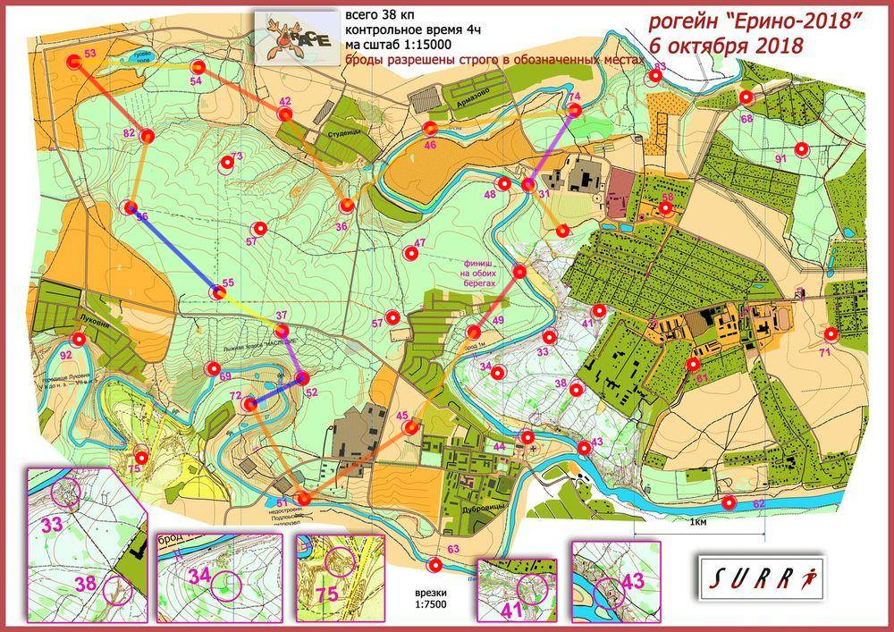

Рогейн Ерино 6.10.18
| Участники | Зорина Марина
|
| Группа | Ж4Б |
| Место | 7 |
| Очки | 77 |
| Штраф | 10 |
| Время | 04:04:01 |
| Результат | 67 |
| КП | Время | Сплит | Расстояние, км | Темп, мин/км |
|---|
| С | 12:00:00 | | | |
| 31 | 12:06:23 | 00:06:23 | 0.437 | 14.6 |
| 74 | 12:26:52 | 00:20:29 | 0.67 | 30.6 |
| 46 | 12:41:55 | 00:15:03 | 1.111 | 13.5 |
| 36 | 12:53:21 | 00:11:26 | 0.862 | 13.3 |
| 42 | 13:05:49 | 00:12:28 | 0.838 | 14.9 |
| 54 | 13:19:39 | 00:13:50 | 0.753 | 18.4 |
| 53 | 13:31:27 | 00:11:48 | 0.955 | 12.4 |
| 82 | 13:48:26 | 00:16:59 | 0.805 | 21.1 |
| 56 | 13:56:39 | 00:08:13 | 0.558 | 14.7 |
| 55 | E | E | 0.934 | >999 |
| 37 | 14:26:48 | E | 0.561 | <1 |
| 52 | 14:39:10 | 00:12:22 | 0.397 | 31.1 |
| 72 | 15:06:40 | 00:27:30 | 0.444 | 62.0 |
| 51 | 15:19:49 | 00:13:09 | 0.832 | 15.8 |
| 45 | 15:36:28 | 00:16:39 | 0.988 | 16.9 |
| 49 | 15:48:15 | 00:11:47 | 0.867 | 13.6 |
| Ф | 16:04:01 | 00:15:46 | 0.582 | 27.1 |
| | | 04:04:01 | 12.034 км | 20.3 мин/км |
|---|
